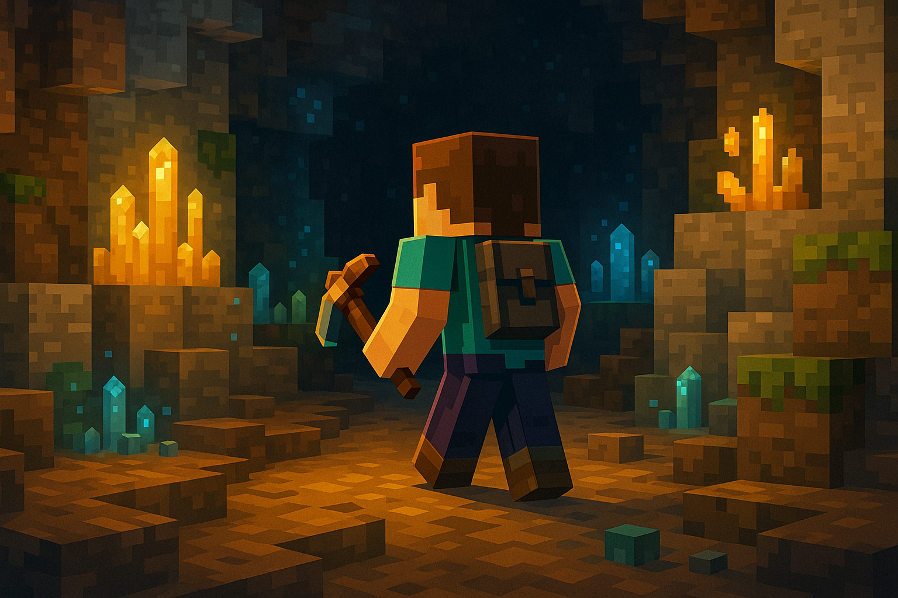

Как подключиться
- Скачайте архив со сборкой модов.
- Откройте папку
.minecraftчерез Win+R и ввод%APPDATA%/.minecraft. - Распакуйте содержимое архива в папку
mods. - Запускайте игру и наслаждайтесь!